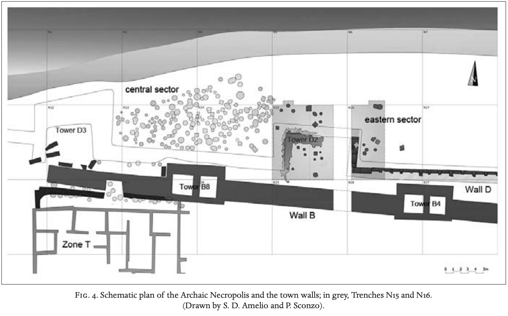

A Digital Project
This year on Mozia, the Univeristy of Palermo continued its
excavations in the north-east quarter, directed by Dr. Paola Sconzo.
Dr. Jason Herrmann, from the Univerity of Pennsylvania, along with
myself and PhD student Eric Hubbard, continued to geophysically survey
the island's vineyards using magnetic gradiometry;
this
is an ongoing project that Dr. Herrmann and Dr. Sconzo have been
working on together for many years.
I was incredibly lucky to work on this dig as an assistant to Dr.
Herrmann, and luckier yet to have met so many wonderful and
hardworking people. Along with the geophysical survey of the
vineyards, I worked on tasks related to GIScience and 3D
visualization, such as the day-to-day mapping and photogrammetic
documentation of the excavated areas and features inside them. Having
received a summer fellowship from the
Price Lab at the University of Pennsylvania,
I intended to use data from the excavation season to design my own
project which combines the aforementioned GIScience / 3D visualization
with web design. This website is the product of that intention. The
homepage (which you are currently on) provides a brief history of
Mozia and an overview of the areas excavated this season.
On the page linked above (Il Forno), you can experience the
excavation of a kiln found in Area K through images, orthomosaics, and
3D models, while I explain how these assets were created, walk you
through the excavation, and breifly discuss potential for growth. In
the footer, you can find links to pages containing the final write-up
for the project with citations and the acknowledgements. In order to
be open-source, this site has been made available as a
github repository,
where you can access the code and any assets attached to the project.
A Brief History of the Island
Mozia lies just off the coast of Marsala, on the Northwestern tip of Sicily. It carries many names (Mozia, Motya, San Pantaleo, etc.) and a rich history going back to the 8th century BCE, when it was settled by the Phoenicians. By 650 BCE, Ancient Motya had grown into a prosperous trade city, protected by the Stagnone lagoon. The city contained "residential houses, sanctuaries, public buildings, a market area and industrial workshops," all of which were surrounded by an impressive fortification following the coastline. Around 409 BCE, Motya had fallen under the control of Carthage, and it became one of their most important commercial cities. In approximately 397 BCE, Dionysius of Syracuse successfully laid siege to the island, and, according to Diodorus Siculus, killed any surviving inhabitants. Carthage almost immediately regained possession of the island, but Motya never recovered its former importance. There is no written history describing what happened to the island after the siege, but there is archaeological evidence of Greek and Roman inhabitation in the following centuries. In the 11th century, Basilian monks settled on the island, giving it the name San Pantaleo.
Mozia is currently a winery run by the Fondazione G. Whitaker, but side-by-side the vineyards are ancient ruins, some of which are still being excavated today. In fact, there have been excavations on Mozia since the late 18th century, but it was in 1906 when Giuseppe Whitaker began the first of the large-scale excavations. He would be the first to study its archaeology, publishing a book on his findings in 1921. University led excavations began later in the 20th century. When you visit the island now, you can see artifacts on display in Museo Whitaker, like the Youth of Motya, and check out the ruins as you walk around island. In the summer months there are active excavations like the one directed by Dr. Sconzo, among others.

Orthomosaic of K64 done on 7/7/23
K64
Mozia provides extensive archaeological evidence of the production of Phoenician and Punic pottery. In the north-east quarter of the island, four different potters' workshops have been identified, including one found by G. Whitaker near the North Gate, as well as a kiln excavated near a tower on the eastern side, another workshop excavated just south of the early cemeter, and the “Ker-ameikos” of Area K excavated by UNIPA in 1977-1994. Area K stands as a structural example of Punic industrial workshops during the 6th and 5th centuries BC. The UNIPA team uncovered a large inner courtyard surrounded by a mud-brick enclosure. There was a row of rooms at the rear, and attached to one was a staircase that led to some sort of upper floor or terrace. They found "deep rock-cut wells, stone vats, clay basins, pure clay deposits, rows of up turned Punic amphoras, unbaked pots and loom-weights, raw materials and other installations for clay levigation and vessel preparation." Moreover, two kilns were excavated and identified as being similar in structure to those of Phoenicia and Iron-Age Palestine: omega shaped with bilobate combustion chambers. It is near one of these larger kilns that this most recent kiln was found. In the image on the left you can see the kiln excavated this summer, and below it is a tent which covers the larger kiln excavated in the late 20th century.
The Necropolis
Although this project is centered around work done in Area K, it seems appropriate to briefly discuss the Necropolis, as I spent a good deal of time working there. The cemetery was originally uncovered by Whitaker who uncovered numerous cremation tombs. The tombs generally included "cinerary jars, box-shaped stone cists and small, round rock-cut pits containing the burnt bones and ashes of the dead." Funerary offerings included varying forms of pottery: jugs, flasks, dishes, and/or bowls. This attests to the importance of pottery production on the island, especially because the offerings were mainly Phoenician Red Slip Ware, although there was also coarse pottery of local production. Large-scale excavations were again undertaken 70s, when 160 graves were uncovered. These mainly included cremations similar to those found by Whitaker. However, many questions were left unanswered in the course of those excavations, because there was "no sequence dating of the graves, no detailed pottery analysis, and no examination of the human remains." The past and current excavations happening in the Necropolis under the direction of Dr. Sconzo attempt to reconcile these issues. UNIPA dug in N23, N15, and N27 this year. N15 is a trench in the eastern sector, and N23 and N27 are towers that were once part of the island's large fortification.

